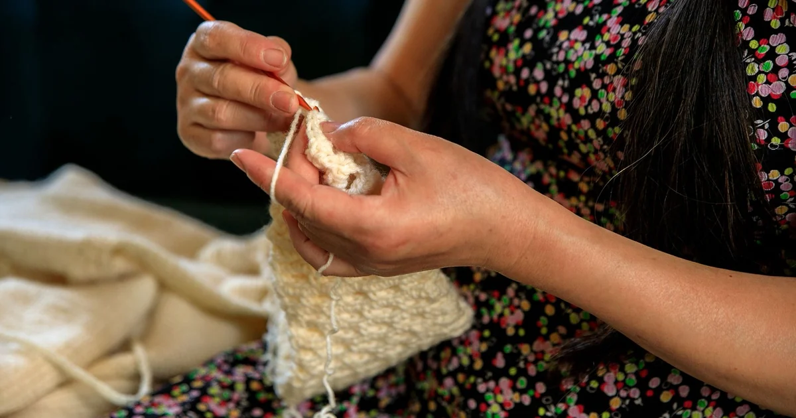
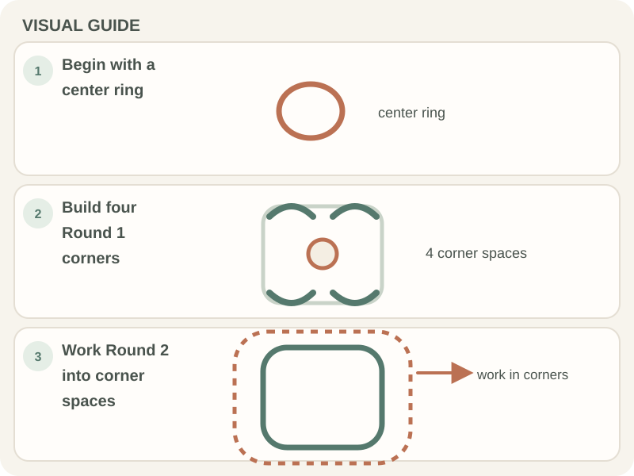

Beginner Projects · Beginner guide
How to Crochet a Beginner-Friendly Granny Square
Build a classic granny square by placing groups of US double crochet around a center and working corner spaces consistently.

Granny-square patterns vary in starting ring, cluster size, and corner chains. This describes a common construction; follow a specific pattern’s counts and joins when using one.
Before you begin
You need yarn, a matching hook, and a way to mark the start if the round is hard to see. The instructions assume US double crochet (dc).
Step-by-step instructions
- For one common version, chain 3 (counts as a US dc) and work 2 dc into a center ring; chain 2 for a corner. Repeat 3 dc and chain 2 three more times, then join to the top of the starting chain. Pattern starts and joins vary.
- Join the round if directed and move to a corner space. In a common next round, work 3 dc, chain 2, and 3 dc in each corner; work chain 1 between corner groups.
- On later rounds, work the specified corner groups into each corner space and a 3-dc cluster into each side space. Follow the pattern’s chain counts and repeats.
- Continue outward, keeping corners above corners and side clusters in matching spaces. Fasten off and secure tails.

What to check
Corners create the square
The diagram shows layout, but starting chains and joins vary. Count corner spaces after each round; the square should expand at the corners rather than curl sharply.
Frequently asked questions
How many chains go in each corner?
It depends on the pattern. Many use a corner chain space, but the number and placement vary.
Why is my square cupping?
Check that corners and side spaces match the pattern. Tension also affects shape; do not add stitches at random.
Read the granny-square round first
For granny square, use this as the starting rule: identify the square’s center, corner spaces, repeats, and joining method before working later rounds. The stitch repeat, gauge, and sizing notes affect the finished shape and amount of work. Read the relevant instructions before beginning and keep them nearby as you work. If a general tutorial and the pattern give different directions, follow the pattern’s stated convention; another project may use a different method.
Find the center and corner spaces
Before proceeding, confirm whether the pattern counts chain spaces as corners or stitches. Write any project-specific choice in your notes so you can apply it consistently. If the pattern or label leaves the detail unclear, look for its own key or maker guidance rather than assuming that another project follows the same convention. This short check can prevent a small misunderstanding from affecting the rest of the work.
Place clusters where the pattern says
A practical way to apply granny square: Read the pattern’s materials, repeat, size, and finishing notes, then place a marker in a corner space and compare each round’s structure. If the stitch or fit is unfamiliar, make a small sample and compare its texture and shape with the pattern’s description before committing to many rows or rounds. Keep the sizing and care information with the project as it grows.
Keep each round aligned
A common mistake in granny square is working into a chain space as though it were a stitch. Watch for this sign: the square twists or its corners stop lining up. That can change the size, shape, or fit from what the pattern describes. Compare the recent work with the pattern and locate the first point where they differ. Correct that detail before continuing; stretching the fabric or adding an unplanned step can hide the cause without fixing it.
Join squares using the stated method
If the square twists or its corners stop lining up, first check whether the pattern counts chain spaces as corners or stitches. Then compare the stitch count, repeat, sizing note, and construction method with what you actually have. Change one thing at a time so you can tell whether it addresses the problem. If the instructions and materials match but the result still differs, use the project’s gauge, sizing, substitution, or care notes as relevant; those are more useful than a universal fix.
Diagnose a square that twists
Remember: consistent corners and round counts support later joining. A sample reveals how the chosen yarn and stitch behave before you repeat them across a larger piece. If you choose an alternative, record it and compare a small sample or written step before applying the change across the project.
Build the next round with confidence
To make granny square easier to repeat, use this sequence: place a marker in a corner space and compare each round’s structure, inspect the result, and only then continue. At first, slow down at the point where the pattern changes direction, begins a new round, or starts a repeat. A removable marker or brief row note can hold your place while you learn the construction. Once the sequence is clear, you can work more steadily without guessing which loop or instruction comes next.
Conclusion: Granny square
Keep this lesson in mind: consistent corners and round counts support later joining. Use the pattern’s gauge, repeat, and sizing notes as you continue. Corners are commonly built in chain spaces, while side clusters are worked between corners. Count the pattern’s groups rather than assuming every square is identical.